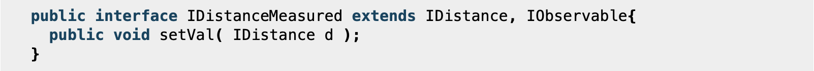
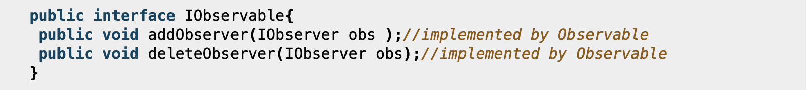
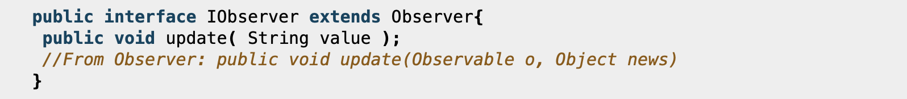
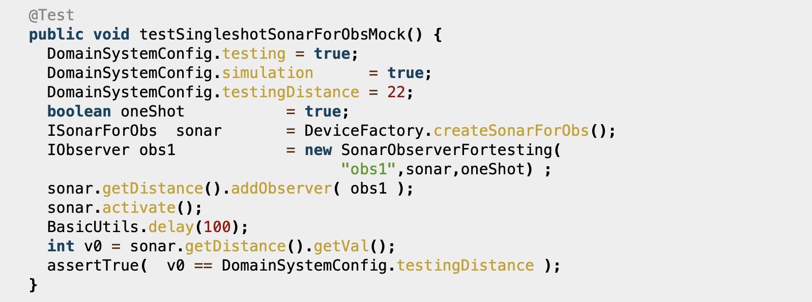
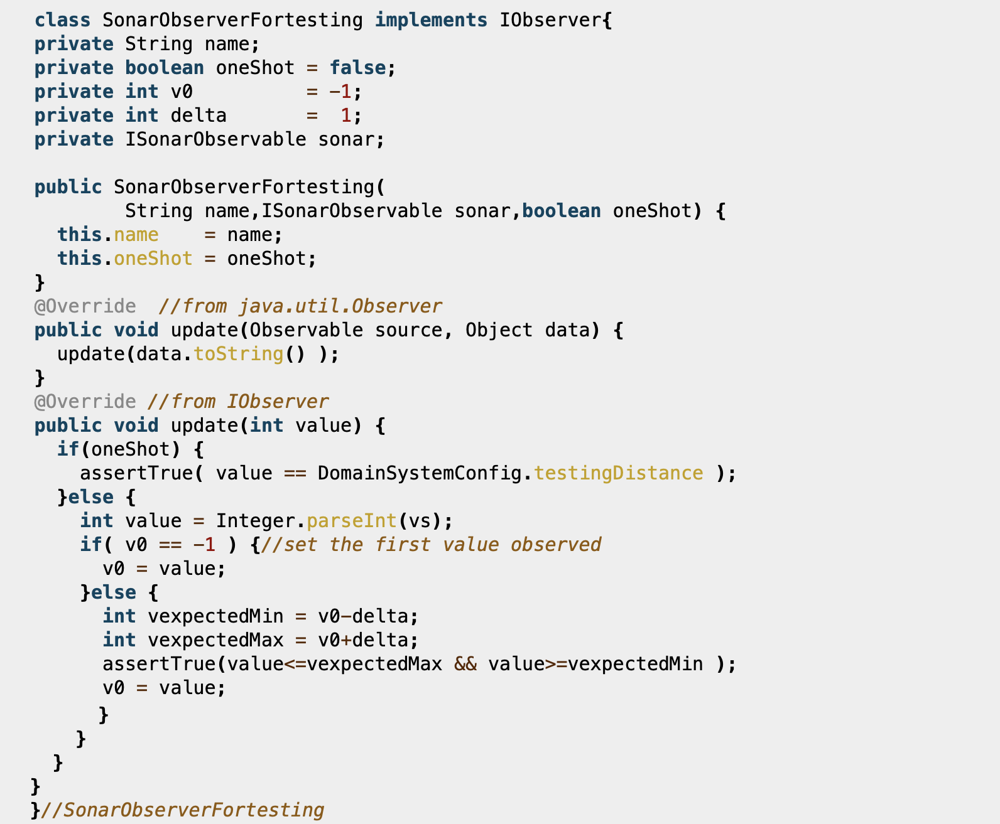

Si desidera realizzare una versione osservabile (SonarObservable) del dispositivo Sonar, che soddisfi i seguenti requisiti:
Il SonarObservable deve inviare informazioni a tutti componenti software interessati alla rilevazione dei valori di distanza;
Il SonarObservable deve fornire valori di distanza solo quando questi si modificano in modo significativo;
I componenti interessati ai valori di distanza prodotti dal SonarObservable sono denominati Observer e possono risiedere sullo stesso nodo del SonarObservable (cioè sul RaspberryPi) o su un nodo remoto (ad esempio sul PC);
Il funzionamento del SonarObservable deve essere testato in modo automatizzato ponendo un ostacolo
a distanza fissa DTESTING1 davanti ad esso, controllando che tutti gli Observers ricevano
il valore DTESTING1. Dopo un qualche tempo, si modifica la posizione dell'ostacolo
a una nuova distanza DTESTING2 e si controlla che gli tutti gli Observers ricevano il valore DTESTING2.
Requirement analysis
Il sistema richiede l'utilizzo di un componente SonarObservable, presente sul RaspberryPi,
il quale possa fornire a tutti i componenti software, detti Observer,
i valori di distanza rilevati dal dispositivo Sonar, quando questi si modificano in modo significativo.
L'invio dei dati può avvenire in remoto (da RaspberryPi verso un computer remoto) o localmente, cioè sul Raspberry stesso.
Problem analysis
Modo 1: utilizzo di una risorsa osservabile che conterrà il dato sulla misura corrente e di un processo che si occuperà di aggiornare tale dato.
Gli observer ottengono informazioni sulle misure effettuando una richiesta all'oggetto osservabile.
Modo 2: utilizzo di una risorsa che, dopo aver inviato una richiesta al Sonar per conoscere il dato corrente,
modifica il proprio stato interno e lo notifica a tutti gli observer.
È preferibile utilizzare il modo 1, cioà considerare la distanza misurata come oggetto osservabile e il
Sonar come un processo che aggiorna tale dato, in quanto è l'informazione che realmente ci interessa.
Secondo il pattern observer un'entità è osservabile se offre dei metodi per cui un observer possa
registrarsi presso di essa. Dunque l'observer (o un thread associato) chiama un metodo di update per conoscere eventuali aggiornamenti del dato.
Una entità osservabile se volesse notificare il suo stato interno dovrebbe recuperare tutti gli osservatori e mandare a tutti la notifica, ed è un processo dispendioso.
Dal punto di vista concettuale la cosa da fare è che un observable debba essere osservato senza dover chiamare egli stesso gli observer.
L'observable emette informazioni senza preoccuparsi che gli observer la recepiscano: l'informazione viene emessa in un ambiente comune, gli observer interessati la catturano.
Optando per l'idea che il Sonar sia un processo che aggiorna il valore di una distanza, introduciamo il concetto di distanza misurata formalizzandolo con una interfaccia:
IDistanceMeasured: dice che una distanza misurata è una distanza IDistance il cui valore può essere modificato. Inoltre è anche un observable in quanto estende IObservable permettendo la registrazione/rimozione di Observer che implementano l'interfaccia IObserver.

IObservable:

IObserver:

Test plans
Project
Il progetto consiste nel realizzare i seguenti componenti:
DistanceMeasured: implementa IDistanceMeasured utlizzando la classe java.util.Observable per le gestione degli Observer. Realizza il concetto di distanza misurata osservabile;
SonarMockForObs: specializza la classe astratta SonarModel realizzando un Sonar mock orientato alla osservabilità dei dati, in quanto produttore di valori di distanza misurata osservabile.
SonarConcreteForObs: specializza La classe astratta SonarModel realizzando un Sonar concreto orientato alla osservabilità dei dati, in quanto produttore di valori di distanza misurata osservabile.
Testing
Il testing sul SonarMockObservable viene impostato nel modo che segue:
si regola il Sonar in modo che produca un valore costante definito in DomainSystemConfig.testingDistance
si introduce (almeno) un observer che controlla che il dato osservato sia quello emesso

L'observer viene impostato in modo da controllare anche dati emessi da un sonar reale che opera con ostacolo fisso posto davanti ad esso, alla distanza prefissata.

Si noti che observer di questo tipo vengono di norma eseguiti all'interno del Thread dell'observable che sta operando per conto di un qualche client.